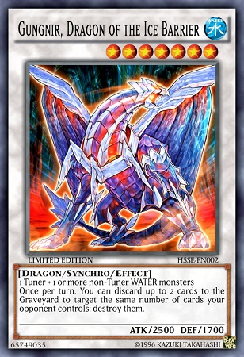

my hobby's are yu-gi-oh TCG, gamen and anime
Yu-Gi-Oh TradingCardGame
What is the Yu-Gi-Oh Trading card game (TGC)? In this game, two players Duel each other using a variety of Monster, Spell, and Trap Cards to defeat their opponent's monsters and be the first to drop the other's Life Points to 0. There are 4 types of monster cards(wich u cna see below : Normal,XYZ,Synchro & pendalum) read the TGC site for more information on Yu-Gi-Oh the Trading Card Game!
Normal Monster
XYZ Monster
Syncro Monster
Pendalum Monster
Anime
i love to watch anime and i like all genre's in anime but i enjoy Supernatural the most!